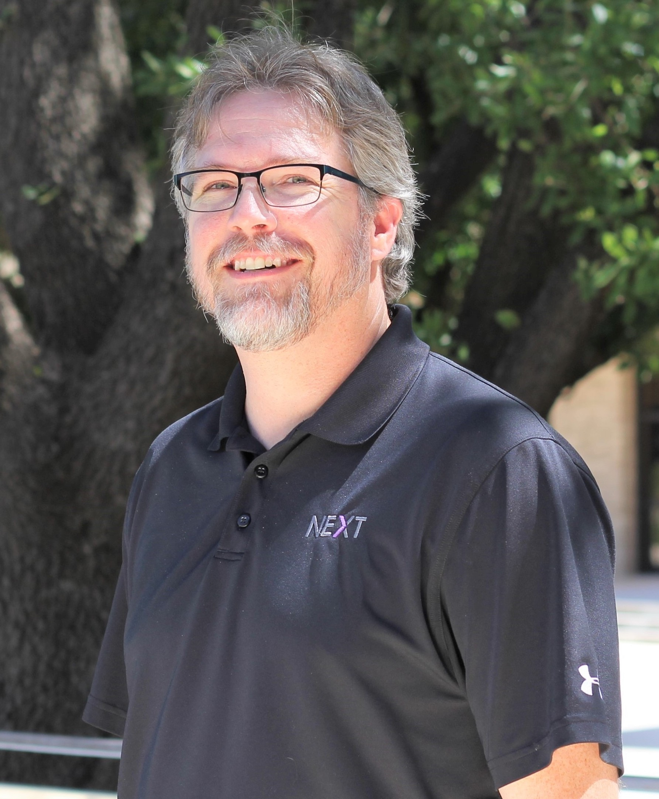

Dr. Timothy L. Head

Associate Professor Department of Engineering and Physics
Email: tim.head@acu.edu
Education
- PhD, University of Illinois at Urbana-Champaign, Solid State Physics, 2007
- MS, University of Illinois at Urbana-Champaign, Physics, 2002
- B.S. in Physics and Mathematics from Texas Tech University, 2000
Honors & Achievements
- STEM Mentor of the Year ACU Undergraduate Research Festival, 2020
- ACU College of Arts and Sciences Mentor of the Year Award, 2020
- ACU Faculty Senate Chair Chain, 2016-2019
- Faculty Renewal Leave, Abilene Christian University, 2015
- 2011-2012 Classroom Teaching Award, Abilene Christian University College of Arts and Sciences, 2012
- Wildcat WOW award, Office of the President and Campus Recruiting 2010
Scholarly Presentations
- Head, T. for NEXT (2018) NEXT Molten Salt Test Loop, Thorium Energy Conference, Brussels,Belgium, 2018.
- Head, T. L., Sauncy, T. Outreach Tools: Building Physics Demos for Fun and Interaction, Joint Meeting of the Texas Section of APS, AAPT, and Zone 13 SPS, San Antonio College, March 9-11,2017.
- Head, T. (2016) Re-imagining Radiation Detection, Adam's Center Faculty Renewal Leave Presentation, Abilene, TX, 2016
- Head, T. L., Joint meeting of the Texas Section of APS, AAPT, and Zone 13 SPS, How can the Society of Physics Students national organization help you, your chapter, and your department? A primer on maximizing the impact of your affiliation., Society of Physics Students, Lamar University,Beaumont, TX. (March 31, 2016).
- Head, T. (2015) SiPM radiation detection, Private meeting with Ludlum Measurements Staff, Sweetwater, TX, 2015
- Head, T. (2015) Science outreach activities, Science Outreach with SPS National Council at H-street festival, Washington, DC, 2015
Professional Service
- President Elect Texas Section of American Association of Physics Teachers 2019-2020
- Vice President of the Texas Section of American Association of Physics Teachers 2019.
- Society of Physics Students, Officer, Other Officer, 2011 - 2017
- Adopt a Physicist, Other, 2015
Community Service
- Upward Basketball, Other, 2016 - present
- ACS 1st grade electricityy workshop, Workshop Organizer, 2015
- Big Country Astronomy Club, Member, 2010 - present
- Minter Lane Church of Christ, Committee Chair, 2010 - present
Campus Service
- Faculty Senate Executive Committee, Other, 2016 - present
- Physics Curriculum Committee, Committee Member, 2015 - present
- Society of Physics Students Faculty Advisor, Faculty Advisor, 2015 - present
Patents
- Patent Pending: T.L. Head and R.S. Towell, Apparatus, Systems, And Methods For Non-Invasive Measurement Of Flow In A High Temperature Pipe, International Patent Application No. PCT/US 19141359.
Funded Research
- Head, T.L., Kennedy, T.J., Pamplin, K., Robb, K.R., The Design and Investigation of Novel Mechanical Filters for Molten Salt Reactors, DOE NEUP Award 2019-2021.
- Towell, R. S., Head, T.L. \Investigation of Instrumentation, Data Analytics, and Simulation Synergies for the Versatile Test Reactor", 2018-present.
- Towell, R. S. (Principal), Head, T. L. (Lead Instrumentation Scientist), Brown, R. L. (Supporting), Robison, A. D. (Supporting), Pamplin, K. L. (Supporting), "NEXT Lab," awarded from the Robison Excelsior Foundation (2018).
- Towell, R. S. (Principal), Head, T. L. (Supporting), Brown, R. L. (Supporting), Robison, A. D. (Sup-porting), Pamplin, K. L. (Supporting), "NEXT Lab," awarded from the Dodge-Jones Foun-dation (2018).
- Towell, R. S. (Principal), Head, T. L. (Supporting), Brown, R. L. (Supporting), Robison, A. D. (Sup-porting), Pamplin, K. L. (Supporting), "NEXT Lab," award from Development Corporation of Abilene 2018.
- Awarded faculty renewal leave to work on Advancing Solid State Photomultiplier Tube Technologies with Ludlum Measurements Inc. 2014-2015
Biography
- Dr. Head received a PhD in 2007 from the University of Illinois Urbana-Champaign and started working as faculty at Abilene Christian University. His research has evolved from initial work in low temperature measurement of acoustics and material properties to instrumentation development for molten salt reactors as part of the NEXT Lab project. Recent work includes design and construction of both nitrate and fluoride salt-based molten salt loops and instrumentation to measure the properties of molten salt and associated system at the very high temperatures required for operation of molten salt reactors.